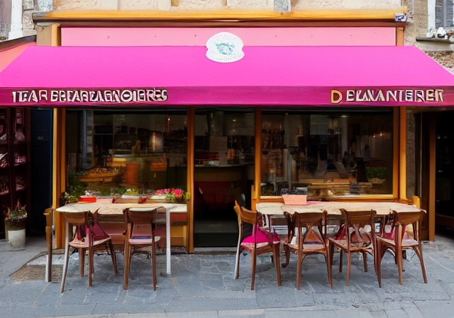

Bienvenue à la boulangerie L'ami du pain
Nous sommes une boulangerie artisanale située à St Marcellin, France. Depuis plus de 20 ans, nous fabriquons du pain et des viennoiseries de qualité supérieure à partir d'ingrédients frais et locaux. Nous sommes fiers de notre savoir-faire et de notre engagement envers la communauté locale.
Venez découvrir notre large sélection de pains, de croissants, de brioches et bien plus encore. Nous sommes ouverts tous les jours de la semaine, sauf le lundi. Nous avons hâte de vous accueillir dans notre boulangerie.